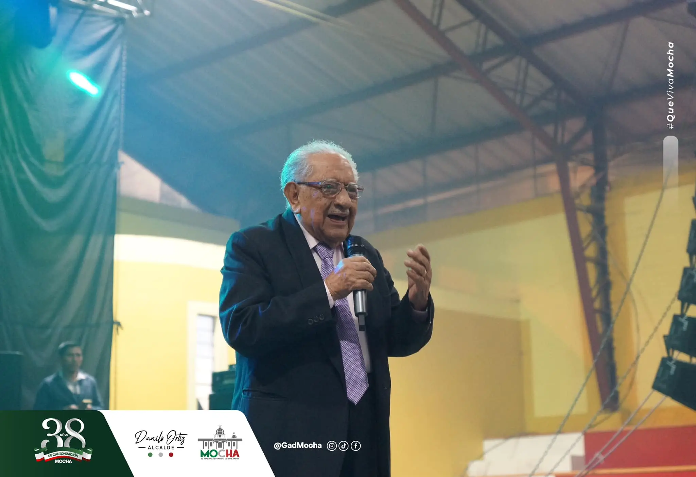
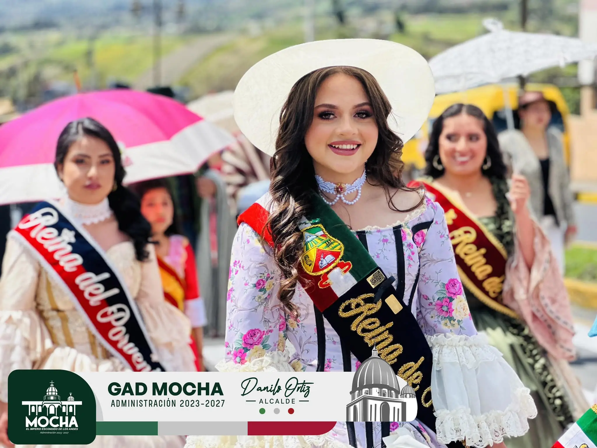
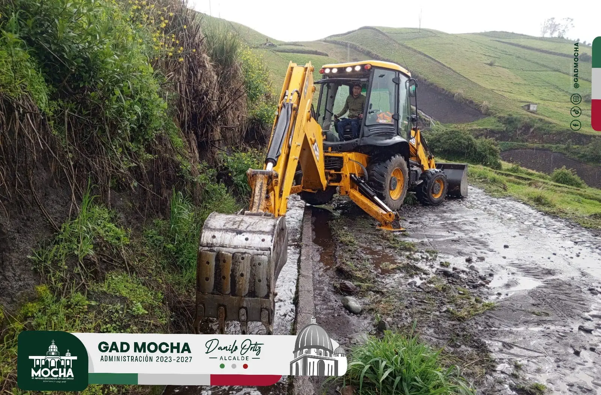

Últimas Noticias

Espectáculos en la ciudad
El legendario Héctor Jaramillo, ícono de la música nacional, hizo vibrar nuestros corazones en el evento del Adulto Mayor con su magistral interpretación. Sus melodías envolvieron el ambiente, llevándonos a un viaje emocional inigualable.
Leer más.webp)
Danilo Ortiz, recibió la visita de las autoridades del GAD Municipal de Pelileo, incluyendo a su vicealcaldesa, parte del cuerpo edil y vicario del hermano cantón.
Leer más

El cantón Mocha se llenó de vida y color con la visita de propios y extraños para celebrar sus famosas octavas.
Leer más
